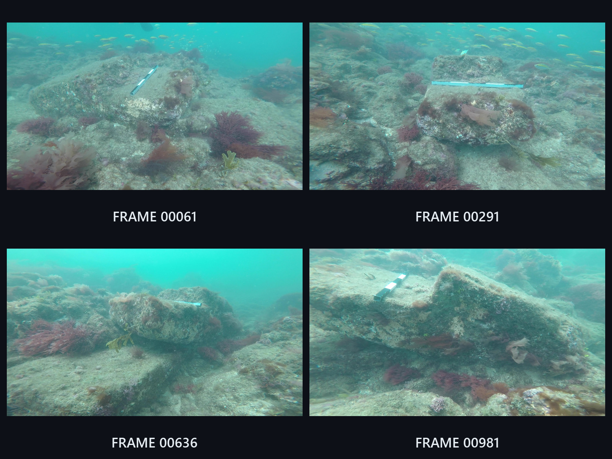
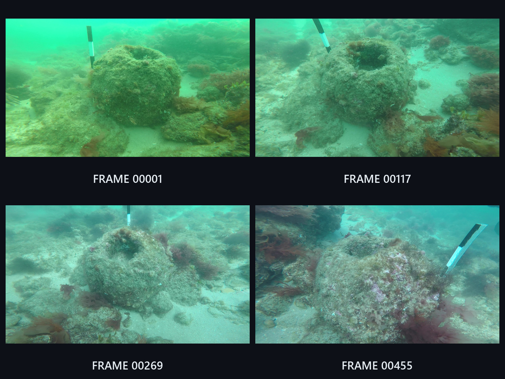
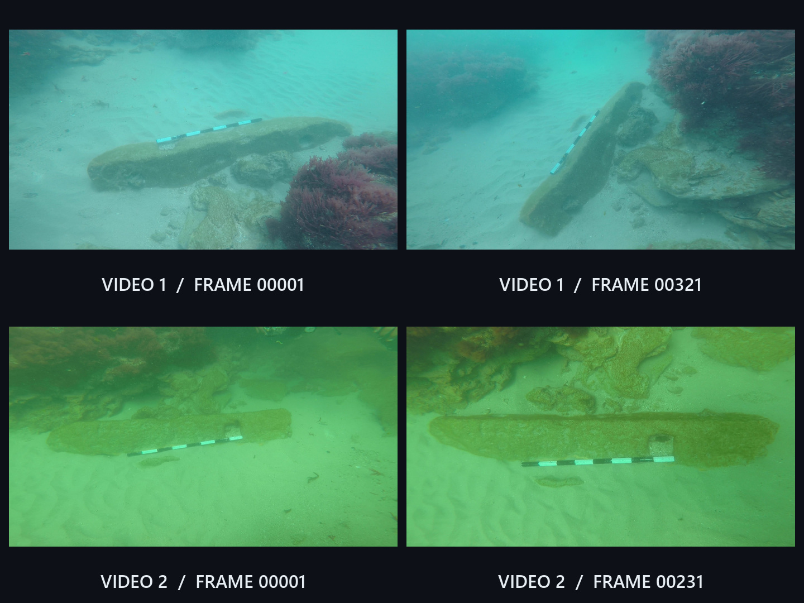
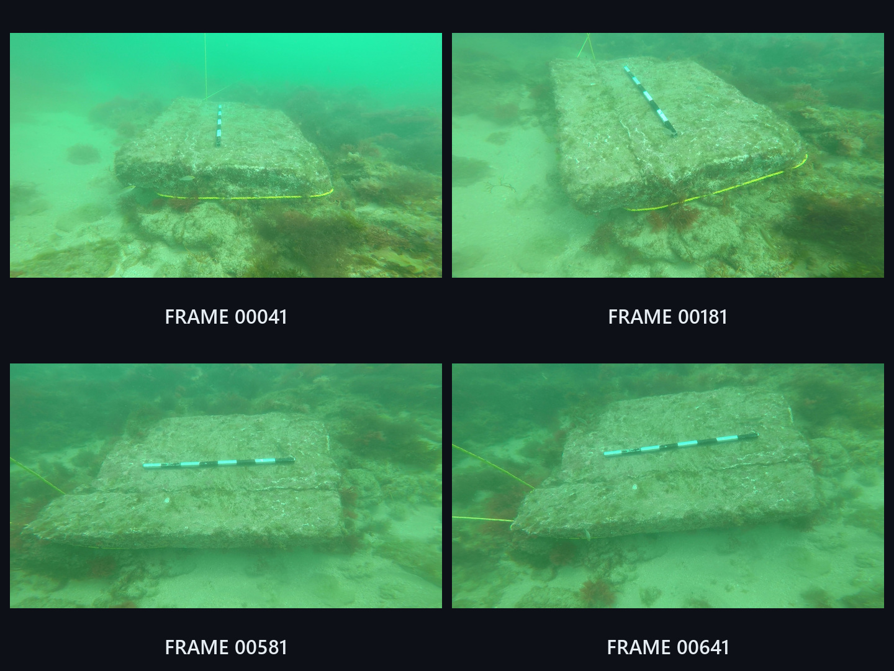

Artifact 1
Selected input views


3D reconstruction
Computer vision · Marine archaeology
Recovering the shape and surface detail of submerged archaeological artifacts from existing expedition footage. My first computer vision project, completed during my mechanical engineering undergraduate studies.
Four artifacts from Dwarka, India. Selected input views show the available coverage; the videos show textured reconstructions from the project. Open a collage to inspect the frames, or play a model turntable.
Selected input views

3D reconstruction
Selected input views

3D reconstruction
Selected input views

3D reconstruction
Selected input views

3D reconstruction
I screened approximately 102 GB of existing expedition imagery and video. The available still photographs did not provide enough usable coverage, so I selected video sequences for reconstruction and compared results produced with Meshroom and Autodesk ReCap.
Choose footage for coverage, stability, overlap, and visibility of the artifact.
Extract frames, inspect image quality, apply color correction, and investigate focal-length metadata.
Apply existing photogrammetry tools to estimate geometry and produce textured models.
Compare visible results, clean meshes, and prepare model views using MeshLab and Blender.
These are visual results from an exploratory project. Evaluation was qualitative; geometric accuracy was not measured. Presented models may include mesh cleanup and presentation edits, so appearance alone should not be read as reconstruction accuracy.
The NIO expedition team acquired the imagery at Dwarka in February 2022. I carried out the subsequent processing and reconstruction during my summer internship at CSIR–National Institute of Oceanography, Goa, under the guidance of Mr. Sundaresh, with guidance from Pramod Kumar Maurya.